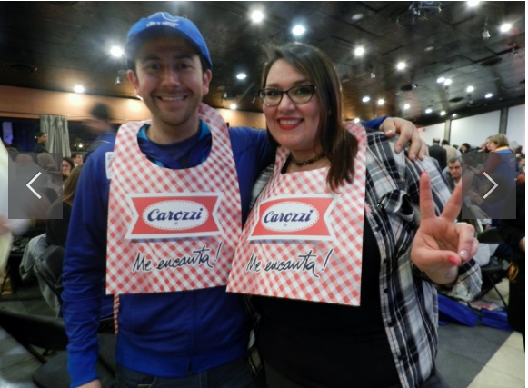

Voluntarios
Muchisimas Gracias por su participación

Somos mas que un grupo de trabajo!
Somos una familia
Taller de Ski
Montaña de la Alegría
Muchisimas Gracias por su participación
Somos una familia
Montaña de la Alegría
El objetivo de este proyecto es beneficiar a jóvenes recuperados de cáncer con becas académicas, para lograr la continuidad de estudios pendientes y obtener una profesión futura y reinserción en la sociedad. Las becas podrán atender a los jóvenes con estudios universitarios, técnicos profesionales o de centros de formación técnica. Así también podrán tener alcances parciales y en ocasiones especiales, totales. El año 2018 se otorgaron un total de 28 becas de las cuales 15 corresponden alumnos antiguos y 13 son para alumnos que inician sus estudios superiores este año 2018. Para que estas becas sean bien utilizadas, sean objetivas y sean supervisadas, elaboramos requisitos básicos y similares a los utilizados en el resto de las instituciones que entregan estos beneficios.
Con gran éxito se desarrolló nuestra Tallarinata de Amor y Sonrisas el 30 de agosto en el Estadio del Banco Central. La velada estuvo animada por nuestro amigo y permanente colaborador Checho Hirane, además de contar con la extraordinaria presentación de Andrea Tessa y otros artistas invitados. Agradecemos a todos los asistentes que compartieron, donaron dinero y tiempo a esta noble causa, cuyo principal objetivo es entregar una vida más llevadera a los con cáncer atendidos a en los hospitales públicos de nuestro país.
Taller de Ski Se realizó como todos los años en Portillo del 21 al 25 de agosto y contó con la participación de 7 jóvenes chilenos, 2 ecuatorianos y 1 de España. Todos amputados de una extremidad inferior, como secuela de su enfermedad. El objetivo de este Programa es demostrar a los participantes, que su impedimento físico no los limita para plantearse y superar desafíos, tales como el aprender a esquiar y que con optimismo y fuerza lograrán todos los objetivos que se propongan en su vida. El coordinador responsable y voluntario de la FNyC es Patricio Morandé, instructor de ski, que también sufrió una amputación producto del cáncer siendo muy joven. Participó en las Olimpiadas para Discapacitados organizadas en Salt Lake City (EE.UU.) el año 2002, en la que obtuvo el puesto N°11.